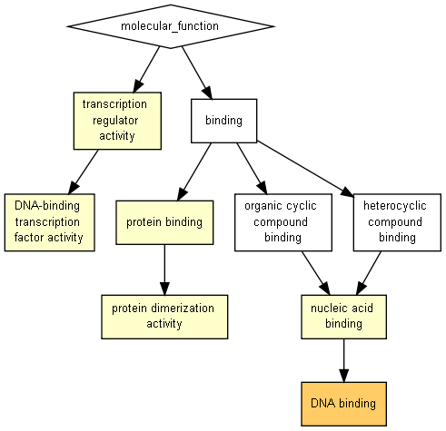

P-value color scale
| > 10-3 |
10-3 to 10-5 |
10-5 to 10-7 |
10-7 to 10-9 |
< 10-9 |

| GO term |
Description |
P-value |
FDR q-value |
Enrichment (N, B, n, b) |
Genes |
| GO:0003677 |
DNA binding |
8.79E-6 |
2.21E-2 |
4.53 (9332,1288,16,10) |
[+] Show genes
SWI3C - swi/snf complex subunit swi3c
IDD5 - indeterminate(id)-domain 5 protein
SEU - seuss transcriptional co-regulator
AGL65 - protein agamous-like 65
SCRM2 - transcription factor scream2
NAC006 - nac domain-containing protein 6
BRM - putative transcription regulatory protein snf2
WRKY21 - wrky dna-binding protein 21
AT2G41900 - zinc finger ccch domain-containing protein 30
ARF19 - auxin response factor 19
|
| GO:0003676 |
nucleic acid binding |
1.17E-5 |
1.48E-2 |
3.80 (9332,1688,16,11) |
[+] Show genes
SWI3C - swi/snf complex subunit swi3c
IDD5 - indeterminate(id)-domain 5 protein
SEU - seuss transcriptional co-regulator
SCRM2 - transcription factor scream2
AGL65 - protein agamous-like 65
NAC006 - nac domain-containing protein 6
BRM - putative transcription regulatory protein snf2
WRKY21 - wrky dna-binding protein 21
PAB8 - poly(a) binding protein 8
AT2G41900 - zinc finger ccch domain-containing protein 30
ARF19 - auxin response factor 19
|
| GO:0046983 |
protein dimerization activity |
5.29E-5 |
4.43E-2 |
11.30 (9332,258,16,5) |
[+] Show genes
SEU - seuss transcriptional co-regulator
AGL65 - protein agamous-like 65
SCRM2 - transcription factor scream2
LUG - transcriptional corepressor leunig
ARF19 - auxin response factor 19
|
| GO:0140110 |
transcription regulator activity |
6.43E-5 |
4.04E-2 |
4.95 (9332,942,16,8) |
[+] Show genes
IDD5 - indeterminate(id)-domain 5 protein
SEU - seuss transcriptional co-regulator
AGL65 - protein agamous-like 65
SCRM2 - transcription factor scream2
NAC006 - nac domain-containing protein 6
WRKY21 - wrky dna-binding protein 21
AT2G41900 - zinc finger ccch domain-containing protein 30
ARF19 - auxin response factor 19
|
| GO:0005515 |
protein binding |
3.18E-4 |
1.6E-1 |
2.72 (9332,2363,16,11) |
[+] Show genes
SWI3C - swi/snf complex subunit swi3c
SYP32 - syntaxin-32
SEU - seuss transcriptional co-regulator
SCRM2 - transcription factor scream2
AGL65 - protein agamous-like 65
BRM - putative transcription regulatory protein snf2
WRKY21 - wrky dna-binding protein 21
MED9 - hypothetical protein
LUG - transcriptional corepressor leunig
PAB8 - poly(a) binding protein 8
ARF19 - auxin response factor 19
|
| GO:0003700 |
DNA-binding transcription factor activity |
4.03E-4 |
1.69E-1 |
4.53 (9332,902,16,7) |
[+] Show genes
IDD5 - indeterminate(id)-domain 5 protein
AGL65 - protein agamous-like 65
SCRM2 - transcription factor scream2
NAC006 - nac domain-containing protein 6
WRKY21 - wrky dna-binding protein 21
AT2G41900 - zinc finger ccch domain-containing protein 30
ARF19 - auxin response factor 19
|
Species used: Arabidopsis thaliana
The system has recognized 9838 genes out of 15787 gene terms entered by the user.
9838 genes were recognized by gene symbol and 0 genes by other gene IDs .
326 duplicate genes were removed (keeping the highest ranking instance of each gene) leaving a total of 9512 genes.
Only 9332 of these genes are associated with a GO term.
The GOrilla database is periodically updated using the GO database and other sources.
The GOrilla database was last updated on Jul 7, 2018
This results page will be available on this site for one month from now (until
Aug 6, 2018
). You can bookmark this page and come back to it later.
'P-value' is the enrichment p-value computed according to the mHG or HG model. This p-value is not corrected for multiple testing of 2515 GO terms.
'FDR q-value' is the correction of the above p-value for multiple testing using the Benjamini and Hochberg (1995) method.
Namely, for the ith term (ranked according to p-value) the FDR q-value is (p-value * number of GO terms) / i.
Enrichment (N, B, n, b) is defined as follows:
N - is the total number of genes
B - is the total number of genes associated with a specific GO term
n - is the number of genes in the top of the user's input list or in the target set when appropriate
b - is the number of genes in the intersection
Enrichment = (b/n) / (B/N)
Genes: For each GO term you can see the list of associated genes that appear in the optimal top of the list.
Each gene name is specified by gene symbol followed by a short description of the gene
Back to the GOrilla main page